Kembangkan Minat & Bakat
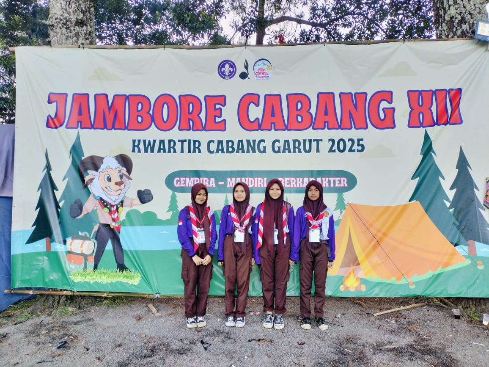
OSIS
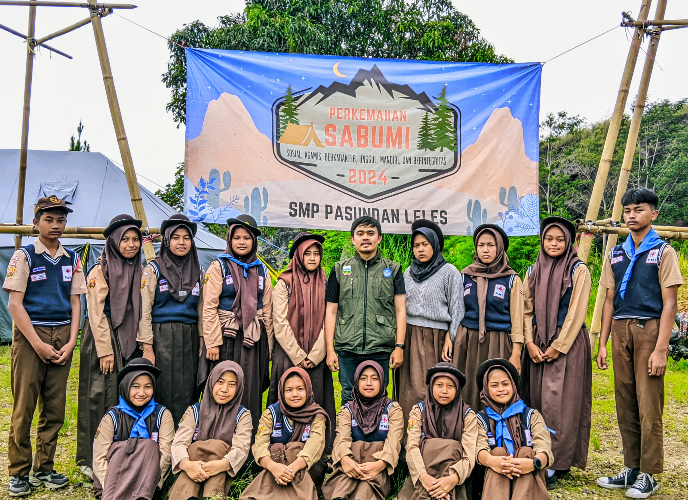
PMR
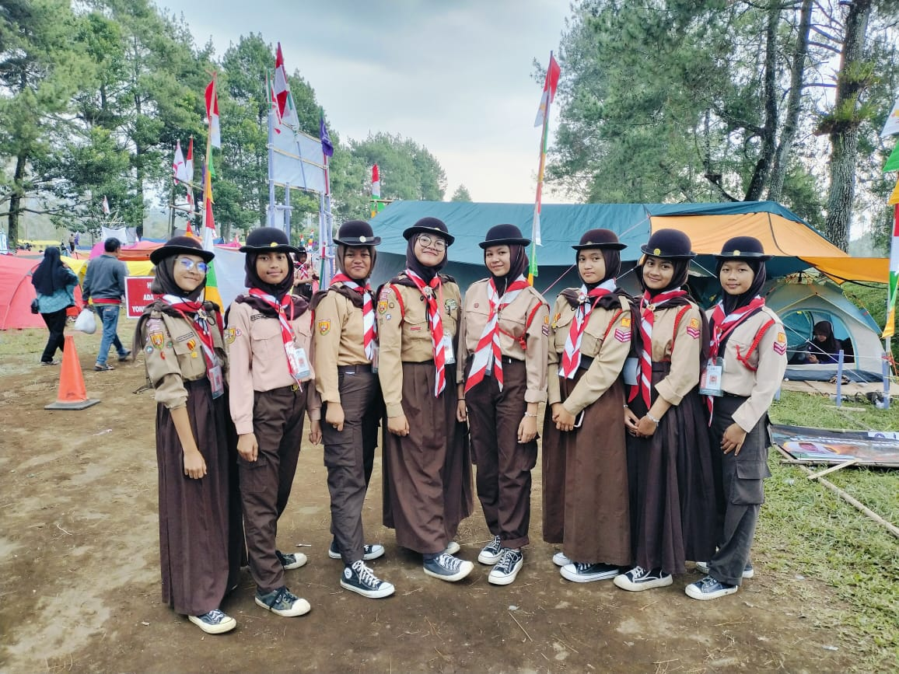
Pramuka
Prestasi SMP Pasundan Leles
Prestasi Olahraga
Siswa SMP Pasundan Leles berhasil meraih prestasi pada ajang Kuro Bushi tingkat Kabupaten Garut.
Partisipasi Lomba Cepat Tepat (LCT)
Siswa SMP Pasundan Leles berpartisipasi dalam Lomba Cepat Tepat (LCT) jenjang SMP tingkat Kabupaten Garut tahun 2026.
Sekolah Berprestasi
Penghargaan Sekolah Aktif dan Berkarakter.
Informasi dan Kegiatan Sekolah
Ikuti berbagai informasi terbaru, kegiatan sekolah, prestasi peserta didik, serta pengumuman resmi SMP Pasundan Leles.
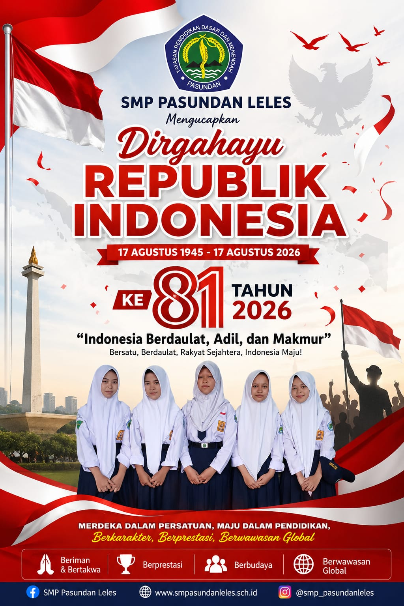
SMP Pasundan Leles Memperingati HUT ke-81 Kemerdekaan RI
SMP Pasundan Leles turut memperingati Hari Ulang Tahun ke-81 Kemerdekaan Republik Indonesia dengan semangat persatuan, prestasi, dan kemajuan dalam pendidikan.
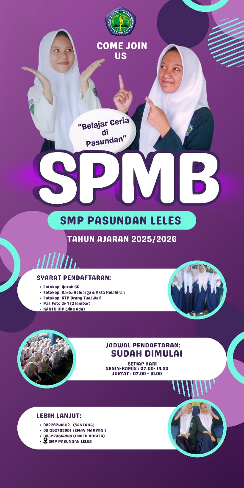
SPMB SMP Pasundan Leles Tahun Ajaran 2025/2026
Pendaftaran SPMB SMP Pasundan Leles Tahun Ajaran 2025/2026 telah dibuka. Informasi mengenai persyaratan, jadwal pendaftaran, dan kontak dapat dilihat pada poster resmi.
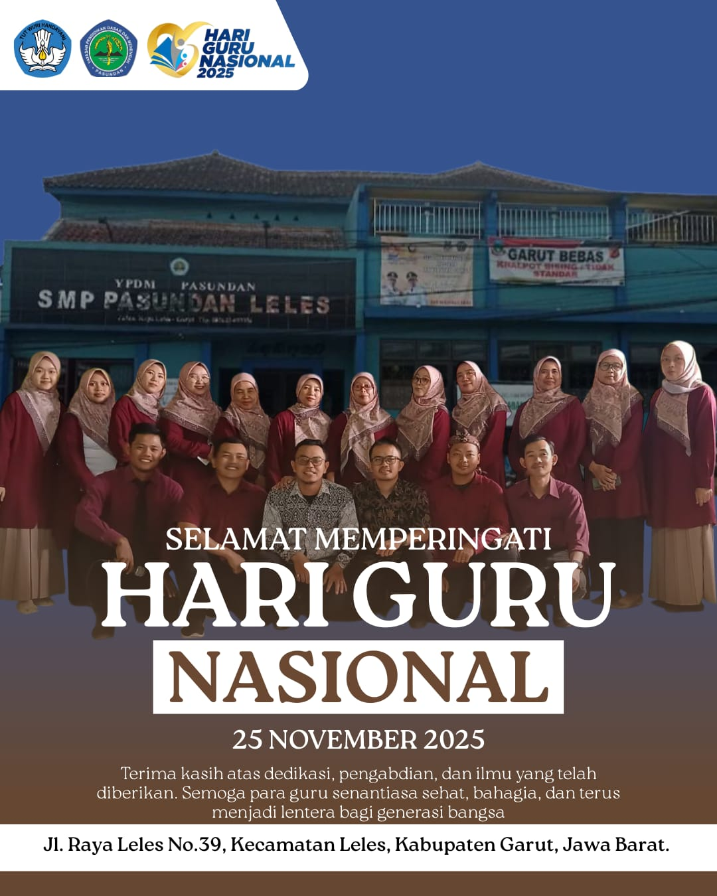
SMP Pasundan Leles Memperingati Hari Guru Nasional 2025
SMP Pasundan Leles turut memperingati Hari Guru Nasional sebagai bentuk penghargaan atas dedikasi, pengabdian, dan kontribusi para guru dalam mendidik generasi bangsa.
Pendaftaran Peserta Didik Baru Telah Dibuka
Bergabunglah bersama SMP Pasundan Leles dan wujudkan masa depan yang gemilang melalui pendidikan yang berkualitas.
- Guru Profesional
- Fasilitas Lengkap
- Banyak Prestasi
- Lingkungan Belajar Nyaman
Guru Profesional
Endeh Rosita. S.Pd
Kepala Sekolah

Anieta Legiani S.Pd
Wakil Kepala Sekolah Kurikulum

Ernawati s,pd.
Guru Matematika

Dede Kartini, S. Pd.
Guru Bahasa Indonesia
Dokumentasi Kegiatan
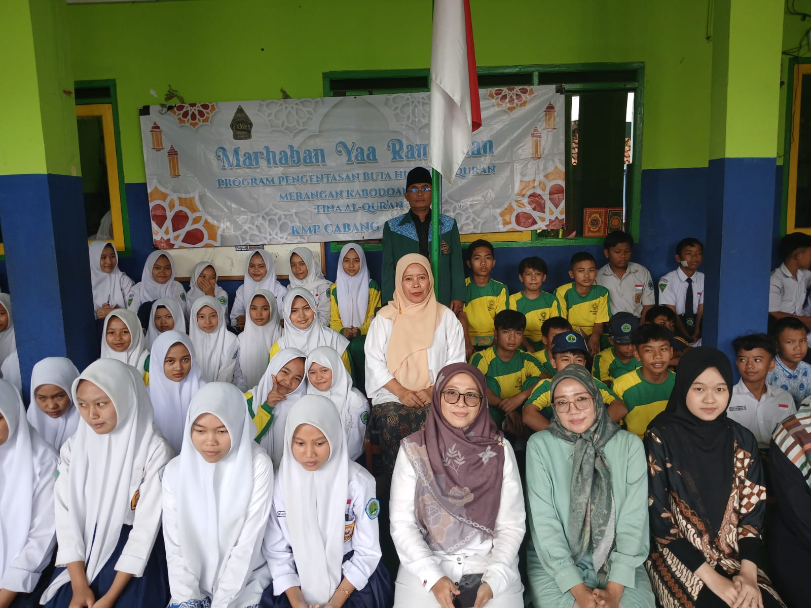
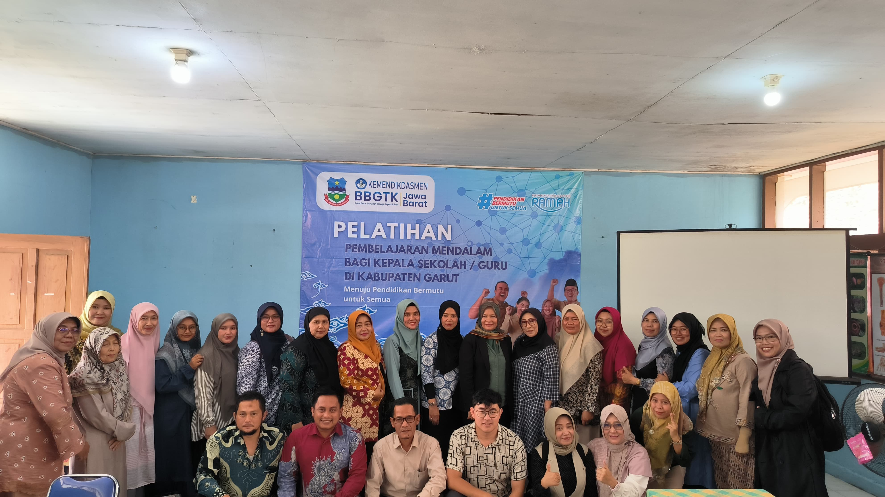
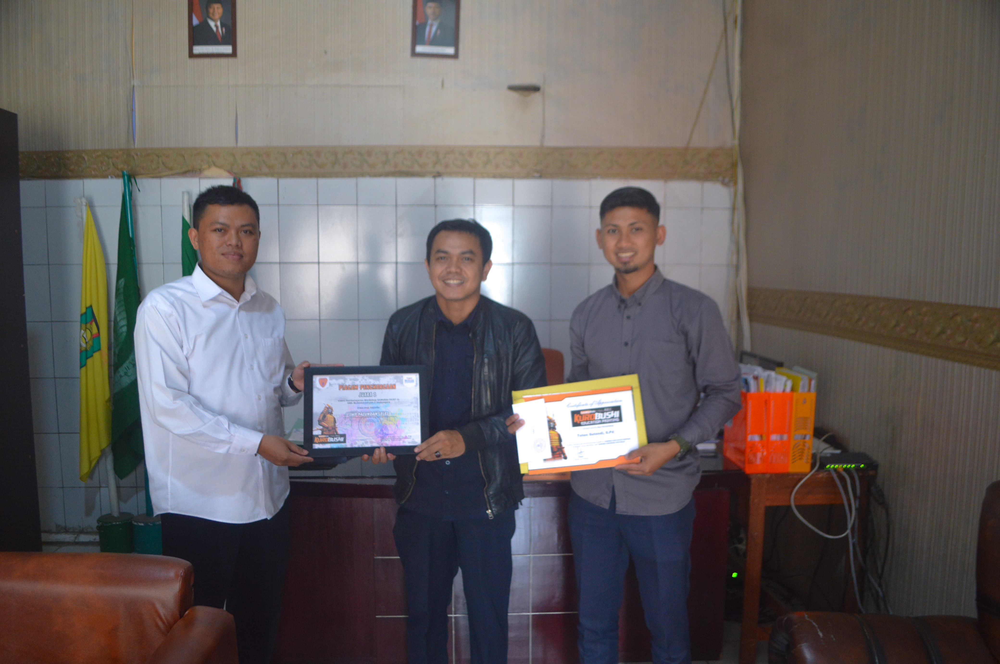
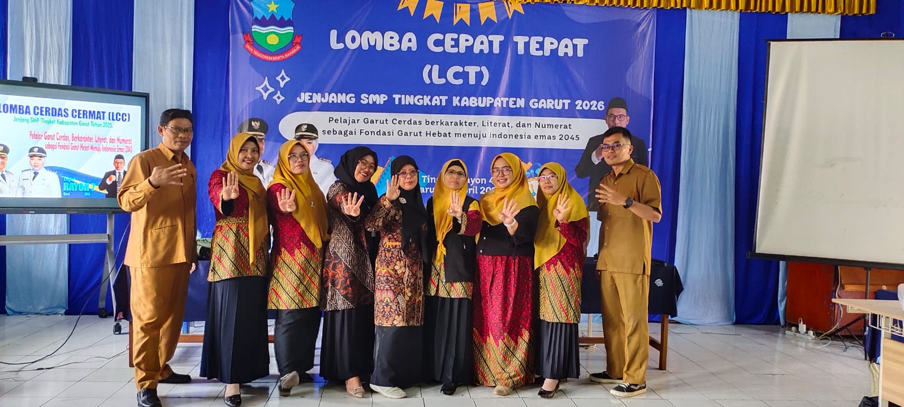
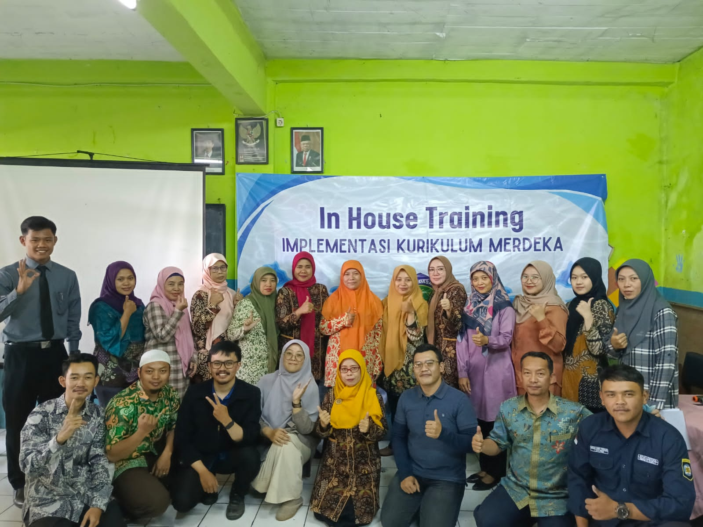
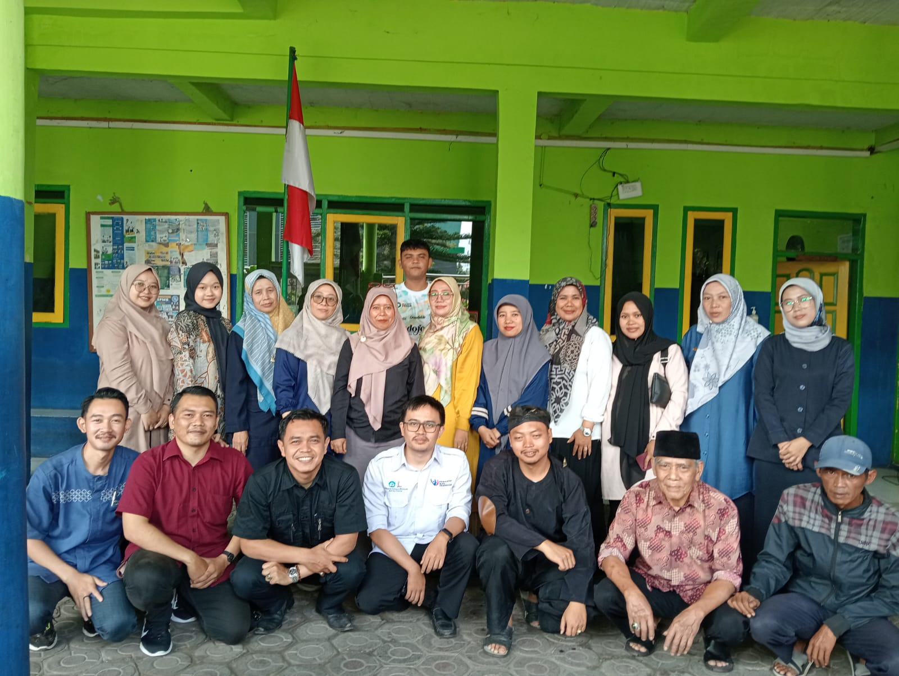